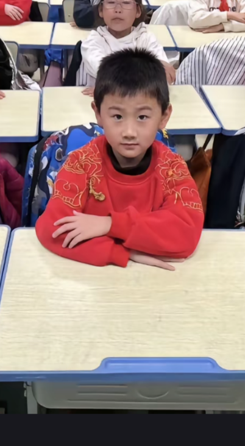
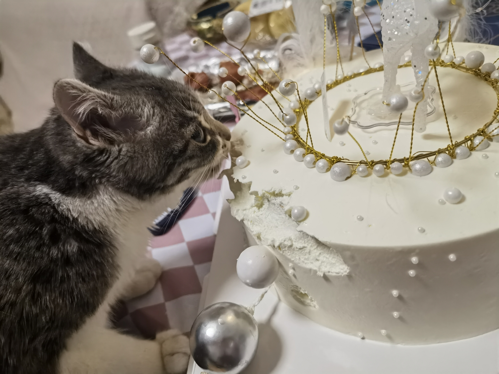
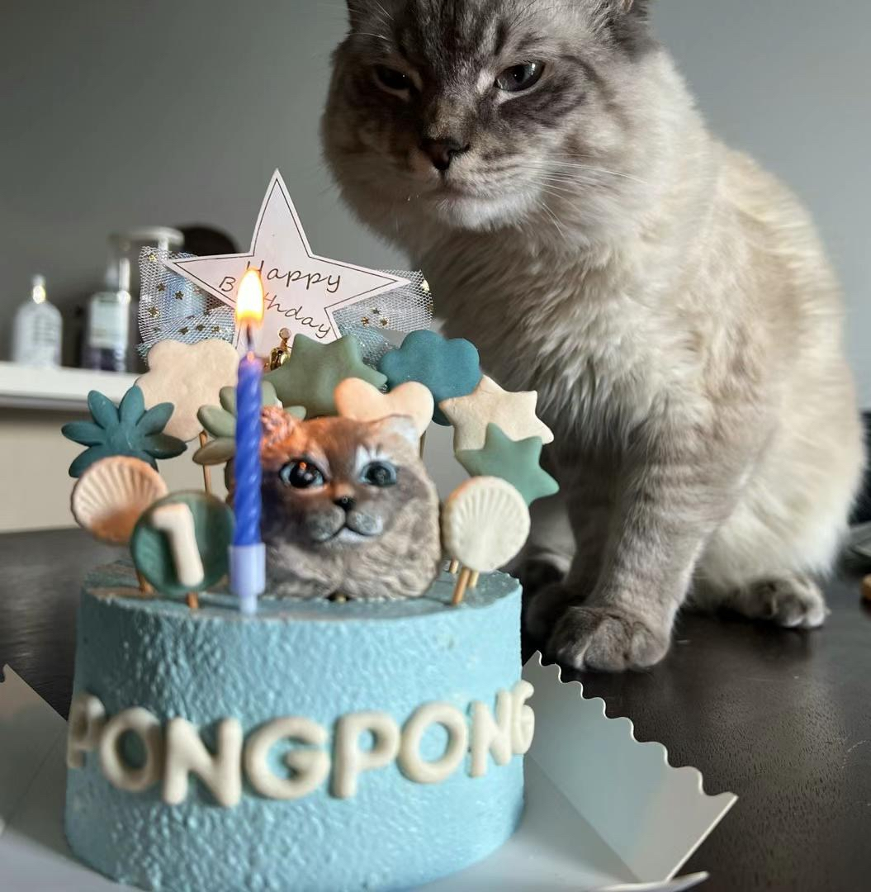
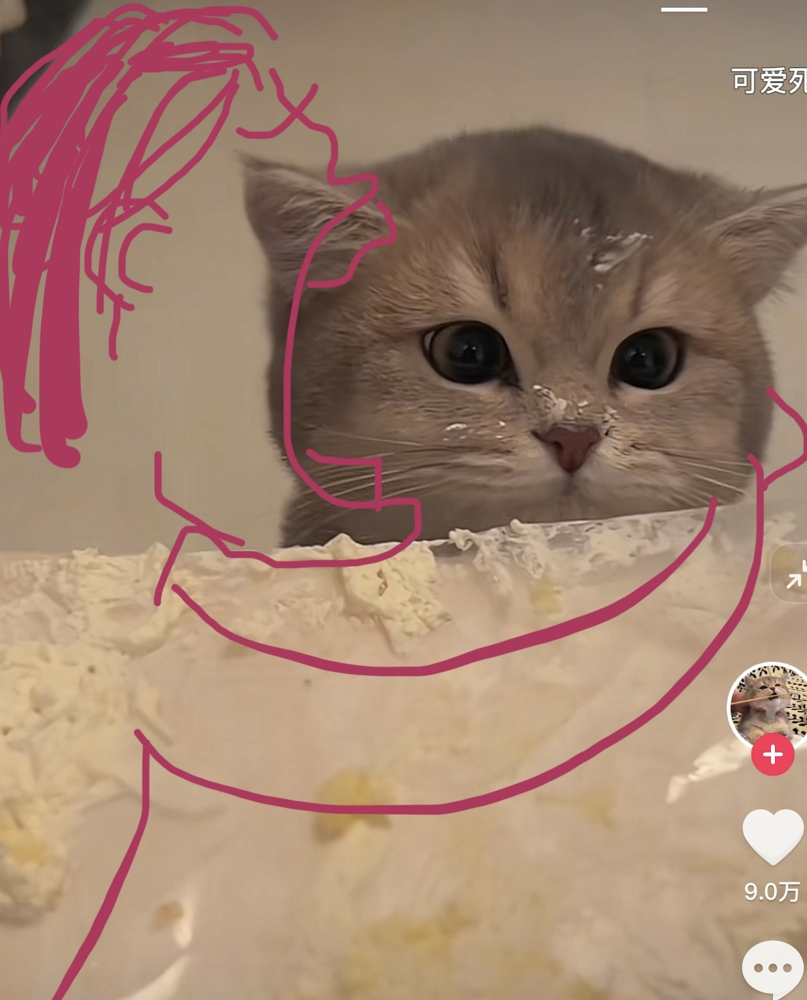
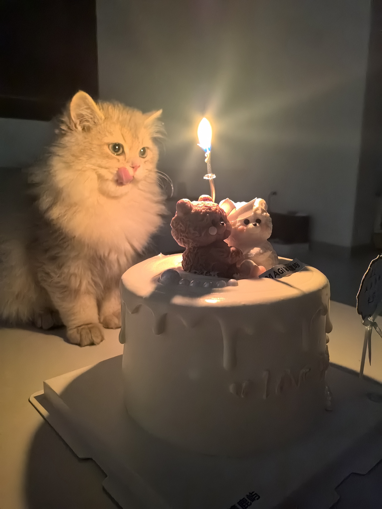
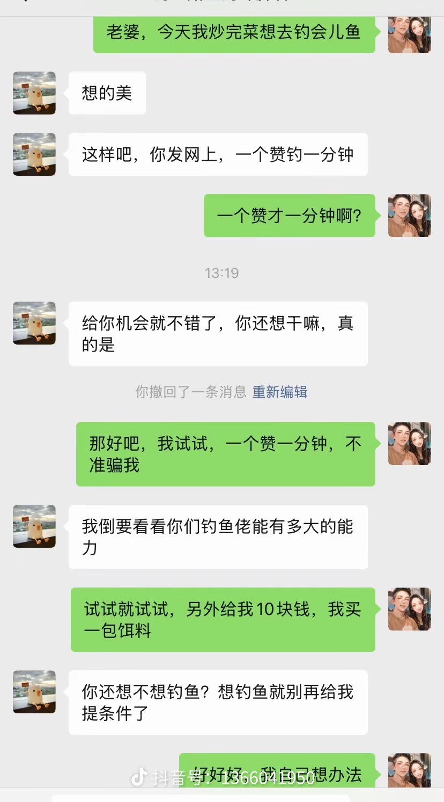

不敢想折腰得多好看 [流泪][流泪][流泪]
好看又会演戏的人终于要复苏了吗，寒冬终会过去[流泪][流泪][流泪][流泪]
有没有觉得这张脸跟年轻时候的张柏芝好像，都是好精致的脸型
演技没得黑，这也是为啥她出来这么多人期待的原因。
身边的丫头是《小巷人家》的庄筱婷唉，真漂亮
为什么老是有人在无忧渡下面提折腰 [愉快]
女主哭的时候那种抽噎感太牛了 情绪直接一秒带入进去 太棒了
好可爱的丫鬟也好漂亮，祖儿都好久没看到新作品了，应该后面陆续都上了会
没有电话的年代 天天偶遇[捂脸]
下一个就该虞姬一人干碎大秦40万大军了
1.傍巴寡妇秦嬴政是躺赢狗 2.我是吕后就把刘邦做成人彘 3.魏晋南北朝，荒唐且美好 4.武则天要送王子去和亲 5.李世民倒欠半个天下 6.平阳昭公主和李世民对掏 7.刀逼霍去病放了自己的匈奴情人 8.穿越大明和马皇后争宠 9.穿越民国之我要当军阀姨太太
秦始皇：靠寡妇 刘邦：被吕雉做成人彘 朱元璋：被马皇后指挥士兵砍死[捂脸]
男人和女人最大的区别就是。。男人觉得不足时改变自己，女人觉得自己不足时，改变老公哈哈
虽然还没听完但是我突然意识到博主的记忆力是真的好啊看完的书不仅记得名字还记得每个角色的各种情节和故事发展的过程，这些如果不是我背诵的话我只能讲个大概并且可能会时间线混乱[石化]
我觉得谁找雅子帮忙，雅子选择帮也是一种自我价值感，是一种被需要。曾经的工作中明明自己有能力却一直上不去，但分尸这件事里自己能有主导权何尝不是工作中本该属于自己的权利呢，做这些事能弥补自己的缺失，哪怕没有多少钱。
都在夸发色和妆容，我看不懂，很漂亮。 今天这本书，绝了，超爱，感觉影视化的话，会很带感，感觉日本他们也很擅长拍这种内心细腻的变态[暗中观察][暗中观察][暗中观察]
博主精彩的讲了40分钟，评论区都在讨论发色[尬笑]
怎么会有人语速这么快，还能表达逻辑这么清晰[可怜]
逆天梆子分尸都不好好处理[尬笑]
逻辑清晰，咬字清楚，流利叙事，关键40分钟的视频我还听完了[吐舌]真的很享受
雅子的前半生都在被操控，被性别操控被时间操控，被时代操控。而只有手心感受鲜血淋漓的尸块的温热时，她拿回了主动权
这情节变态到我一直皱着眉听下去，抽象但又能理解，唉女性真的是各有各的困境
太喜欢这个新坑了！姐姐一定要做下去啊[流泪][流泪]
听到这次视频很长，我跟弥生一样难掩喜悦，赶紧给自己找了点活儿干，不然会觉得幸福的时间被浪费了[捂脸]
在家里抽象，在学校里老实 
想上厕所就去
大家闲的没事给我点个赞呗[愉快]
刚开始只觉得他只是玩抽象，但我现在好像爱上他了[流泪][流泪][流泪]
[干饭人]
我过生日蛋糕，一回头 她已经在炫了 一边炫一边瞅我[捂脸][捂脸] 
平时我的蛋糕酸奶猛猛偷吃，花两百刀定的猫咪蛋糕一口不吃[投降] 
不得不拿出这张图了
小猫的脸脸怎么脏脏的，姨姨帮你清理清理[惊喜] 
这个必须有 
猫咪很聪明的嘞，啥不能吃它们都知道，以前我的小猫会玩我的葡萄，但是她不会吃
这女的在那个年代已经存了2万，完全可以去大城市打工，却把钱给一个认识不久的学生，她的脑子配得上她的苦难
菲律宾的，天蝎座之夜3 ，还有个交通费也不错。
小时候网吧打dota，边上一大哥在看这个，让我进入了无限晕状态[看]
封号斗罗啊[暗中观察]
夫妻走到最后，绝对不是爱情，一定是人品，责任，担当，还有良心[感谢]
去年高考有个男生说:“希望我的妈妈母凭子贵”。把这句话送给谢浩南[感谢][感谢][感谢]
视频里的大姐是我姑姑，上周听她说花100多买了二十多斤鳜鱼，高兴坏了。我就觉得奇怪，原来是你啊[赞]
靠哥们一起帮忙哈[比心][比心] 
演小天狼星和戈登局长的时候还能认出来 直到看完《至暗时刻》就彻底懵逼了
说起千面影帝 让我想起张译不同的戏一样的性格和外貌[憨笑]
这期必须点了，奥德曼也算是千面影帝了
大学生考三支一扶就会变成这样
这仨看着都是40岁的样子，没想到是00后哇
这就是农村三巨头吗[流泪]
Read more: